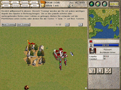
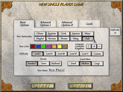

Seven Kingdoms
Dieser Artikel wurde für die folgenden Ubuntu-Versionen getestet:
Ubuntu 16.04 Xenial Xerus
Zum Verständnis dieses Artikels sind folgende Seiten hilfreich:
Seven Kingdoms  ist ein Echtzeitstrategiespiel, das 1997 von der Firma Enlight entwickelt wurde. Im Jahr 2009 wurde es inklusive der 1998 publizierten Erweiterung "Seven Kingdoms: Ancient Adversaries" unter der GPL veröffentlicht und von der Community weiterentwickelt. Nachdem das Spiel 2010 auf SDL portiert wurde, ist es auch nativ für Linux verfügbar. Vorher war das Spiel lediglich für Windows ausgelegt.
ist ein Echtzeitstrategiespiel, das 1997 von der Firma Enlight entwickelt wurde. Im Jahr 2009 wurde es inklusive der 1998 publizierten Erweiterung "Seven Kingdoms: Ancient Adversaries" unter der GPL veröffentlicht und von der Community weiterentwickelt. Nachdem das Spiel 2010 auf SDL portiert wurde, ist es auch nativ für Linux verfügbar. Vorher war das Spiel lediglich für Windows ausgelegt.
Verglichen mit anderen Spielen dieses Genre ist das Hauptziel des Spiels sehr ähnlich - die Vernichtung des Gegners. Es stehen jedoch auch weitere Siegesmöglichkeiten zur Auswahl, wie bspw. das Erreichen einer bestimmten Bevölkerungszahl. Allerdings werden Soldaten, Arbeiter und andere Einheiten in Seven Kingdoms nicht "gebaut", wie aus anderen Spielen bekannt, sondern müssen zuerst als Bauern aus umliegenden Dörfern rekrutiert und anschließend ausgebildet werden. Somit muss man versuchen soviel Dorfbewohner wie möglich unter seine Kontrolle zu bringen. Zusätzlich muss man sich genreüblich um die Nahrungsversorgung der Bevölkerung, sowie die Beschaffung von Rohstoffen und Gold kümmern.
Da Enlight nicht über das Copyright des Introvideos und der Übersetzungsdateien verfügt, fehlen diese im Moment bei der Veröffentlichung. D.h. das Spiel ist zur Zeit lediglich auf Englisch zu haben. Für die Zukunft plant die Entwicklergemeinde eigene Übersetzungen bereit zu stellen. Ist man noch im Besitz des Originalspiels von 1997, kann man die fehlenden Ressourcen von dort in der Open-Source-Variante von Seven Kingdoms verwenden. Zusätzlich fehlt die offizielle Spielanleitung, jedoch kann man bei Problemen auf das Communityportal (Forum, Wiki) , sowie auf mehrere Tutorials innerhalb des Spiels zurückgreifen.
Die Originalmusik wurde im Dezember 2011 Enlight zur kostenlosen Verwendung bereit gestellt und kann separat nachinstalliert werden (siehe Hintergrundmusik).
|  |  |
| Tutorial | 7KAA |
Installation¶
Seven Kingdoms kann über die Ubuntu-Quellen installiert [1] werden:
7kaa (universe)
 mit apturl
mit apturl
Paketliste zum Kopieren:
sudo apt-get install 7kaa
sudo aptitude install 7kaa
Das Spiel kann dann über "Spiele -> Strategie & Taktik -> Seven Kingdoms" gestartet werden.
Manuelle Installation¶
Bei Bedarf z.B. wenn die Pakete in den Qullen veraltet sein sollten, kann man das Spiel manuell installieren. Die folgenden Pakete müssen vor der eigentlichen Installation werden. Sie werden nicht automatisch als Abhängigkeit zusammen mit dem .deb-Paket von Seven Kingdoms mitinstalliert. Falls diese nicht vorliegen, führt dies zu Mehrafwand beim händischen Auflösen der Paketabhängigkeiten.
libsdl1.2debian-all
libopenal1
mit apturl
Paketliste zum Kopieren:
sudo apt-get install libsdl1.2debian-all libopenal1
sudo aptitude install libsdl1.2debian-all libopenal1
Auf der Downloadseite  des Projekts werden deb-Pakete (32 und 64 Bit) angeboten. Nachdem man das für die entsprechende Rechnerarchitektur benötigte Paket herunter geladen hat, kann es wie gewöhnlich installiert [2] werden. Nach der Installation wird kein Eintrag im Menü angelegt. Entweder kann Seven Kingdoms direkt starten[3] (die Binärdatei 7kaa befindet sich im Ordner /var/games/7kaa) oder man erstellt alternativ manuell einen Menüeintrag [4].
des Projekts werden deb-Pakete (32 und 64 Bit) angeboten. Nachdem man das für die entsprechende Rechnerarchitektur benötigte Paket herunter geladen hat, kann es wie gewöhnlich installiert [2] werden. Nach der Installation wird kein Eintrag im Menü angelegt. Entweder kann Seven Kingdoms direkt starten[3] (die Binärdatei 7kaa befindet sich im Ordner /var/games/7kaa) oder man erstellt alternativ manuell einen Menüeintrag [4].
Hinweis!
Fremdpakete können das System gefährden.
Spielen¶
Es empfiehlt sich mit den angebotenen Tutorials ("Einzelspieler -> Tutorials") zu starten. Über den Menüeintrag "Einzelspieler -> Neues Spiel" kann man ein eigenes Spiel erstellen und die Karte, das Spielziel etc. nach dem eigenen Geschmack konfigurieren. Des Weiteren können verschiedene Szenarien ("Einzelspieler -> Szenario") gespielt werden.
Mehrspielermodus¶
Über den Menüpunkt "Multiplayer" kann ein Netzwerkspiel gestartet werden. Diese Komponente ist in der aktuellen Version 2.14 (Dezember 2010) noch nicht vollendet. An der Portierung der Netzwerkunterstützung (SDL_net) wird gearbeitet und soll in einer der nächsten Versionen enthalten sein.
Tastenkürzel¶
| Seven Kingdoms | |
| Taste(n) | Funktion |
| 0 - 9 | Spielgeschwindigkeit (0: Pause, 1: Langsam, ..., 9: schnell) |
| F1 - F8 | Informationsfenster (z.B. Dörfer, Handel, Militär, Technologie etc.) |
| F11 | Bildschirmfoto wird nach der Installation aus den Ubuntuquellen im Homeverzeichnis in ~/Dokumente gespeichert. Hat man das Spiel über die manuelle installiert, werden Bildschirmfotos im Installationsverzeichnis des Spiels gespeichert (/var/games/7kaa). Damit dies funktioniert, muss der Spieler vorher Schreibrechte in diesem Ordner erhalten. Achtung: Änderungen im Rootverzeichnis sollten nur mit Bedacht und von erfahrenen Benutzern vorgenommen werden! |
Fehlende Ressourcen¶
Achtung!
Im folgenden Abschnitt müssen Änderungen im Rootverzeichnis vorgenommen werden. Dies sollte immer mit Bedacht und von erfahrenen Benutzern durchgeführt werden! Zusätzlich ist zu beachten, dass diese Dateien bei der Deinstallation des Spiels nicht automatisch mitgelöscht werden. Diese muss man manuell (mit Root-Rechten [5]) entfernen.
Der Installationsort des Spiels unterscheidet sich abhängig von der Installationsmethode:
Installation aus den Ubuntu-Quellen: /user/share/games/7kaa
Manuelle Installation: /var/games/7kaa
Hintergrundmusik¶
Die Hintergrundmusik des Originalspiels wurde im Dezember 2011 der 7KAA-Gemeinschaft kostenlos zur Verfügung gestellt. Die Musik steht nicht unter einer freien Lizenz und ist ausschließlich zur Verwendung in 7KAA gedacht und freigegeben (weitere Informationen sind der den Musikdateien beigefügten Lizenzdatei zu entnehmen). Das Archiv mit den Musikstücken kann auf der Downloadseite von 7KAA heruntergeladen werden. Nachdem man das Archiv in einem beliebigen Verzeichnis entpackt [6] hat, kopiert man den Ordner music mit Root-Rechten [5] in das Spielverzeichnis.
Ressourcen aus dem Originalspiel¶
Möchte man die noch fehlenden Ressourcen aus dem Originalspiel von 1997 in der Open-Source-Version verwenden, muss man wie folgt vorgehen. Zuerst kopiert man mit Root-Rechten [5] alle .res- und .bin-Dateien aus dem Verzeichnis resource (bzw. in manchen Fällen Resource) von der Installations-CD in den Ordner resource des Installationsverzeichnisses. Gleiches gilt für alle Dateien (*.col und *.icn) und Ordner im Verzeichnis encyc (bzw. auch manchmal mit en~00003 bezeichnet); diese müssen in das Verzeichnis encyc kopiert werden.
Hinweis:
Durch das Verwenden der Übersetzung werden alle Englischen Textausgaben mit den Deutschen überschrieben. Trotzdem kann es vorkommen, dass immer noch einige Englische Texte im Spiel erscheinen.
Des Weiteren befindet sich auf der Original-CD im Ordner manual eine Spielanleitung als PDF-Dokument.

Infobox¶
| Seven Kingdoms | |
| Originaltitel: | Seven Kingdoms |
| Genre: | Echtzeitstrategie |
| Sprache: | ,  aus Originalspiel von 1997 aus Originalspiel von 1997 |
| Veröffentlichung: | 1997, 2009 als Open-Source |
| Publisher: | Enlight |
| Medien: | Online-Download / CD (1) |
| Strichcode / EAN / GTIN: | 4019716102768 / 4019716102782 |
| Läuft mit: | nativ |
Links¶
 - Spielen unter Ubuntu
- Spielen unter Ubuntu- Erstellt mit Inyoka
-
 2004 – 2017 ubuntuusers.de • Einige Rechte vorbehalten
2004 – 2017 ubuntuusers.de • Einige Rechte vorbehalten
Lizenz • Kontakt • Datenschutz • Impressum • Serverstatus -
Serverhousing gespendet von